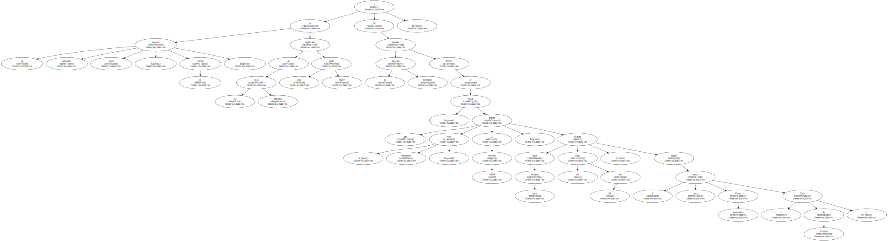
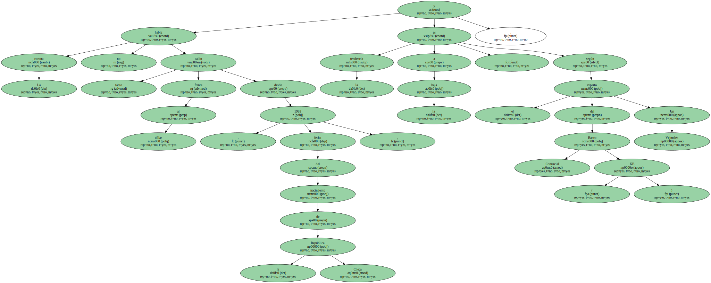
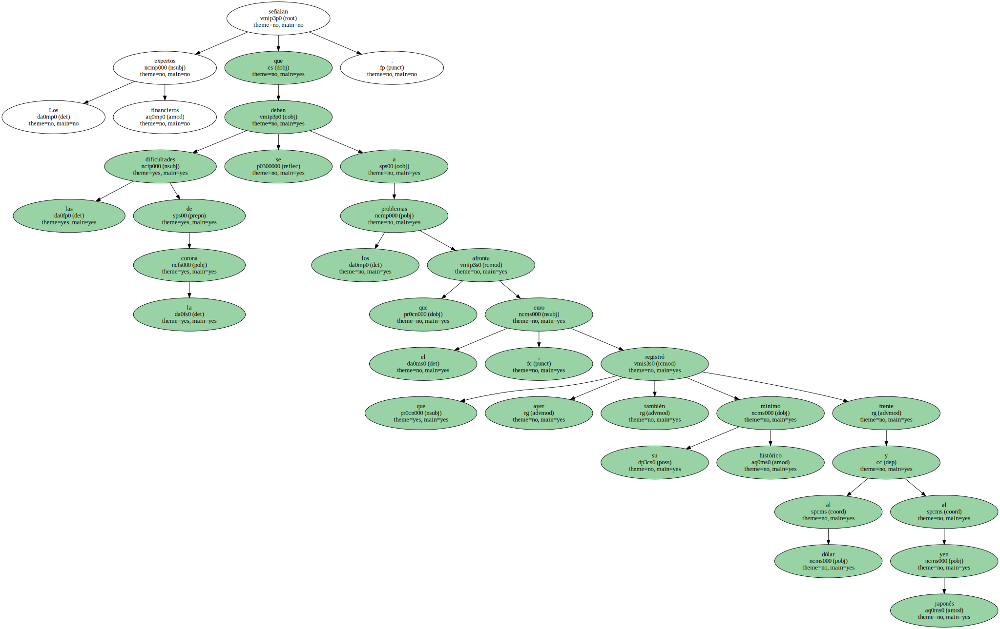
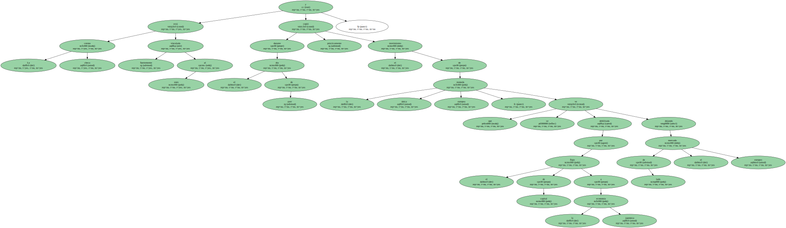
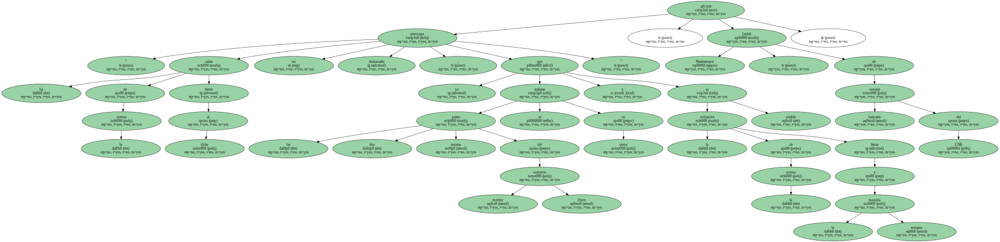
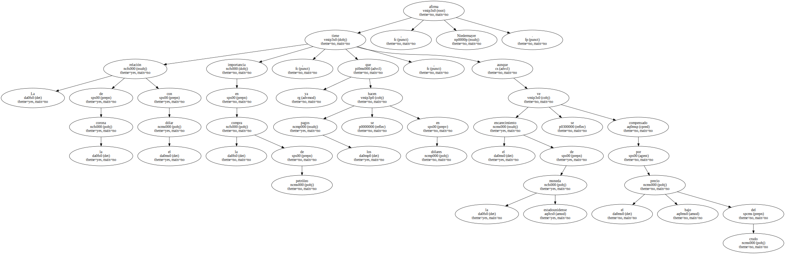

La moneda nacional checa , la corona , ha registrado en los últimos días una fuerte caída y ha tocado su mínimo histórico frente al dólar , que cotiza hoy , miércoles , a 39,50 coronas , cuando hace unas semanas no subía de 36 , según el banco checo Ceska Sporitelna ( Caja de Ahorros ).
La corona no había caído tanto frente al dólar desde 1993 , fecha del nacimiento de la República Checa , y la tendencia es a la baja , según el experto del Banco Comercial ( KB ) Jan Vejmelek.
Los expertos financieros señalan que las dificultades de la corona se deben a los problemas que afronta el euro , que ayer también registró su mínimo histórico frente al dólar y al yen japonés.
La corona checa está fuertemente vinculada al euro y durante el día de ayer prácticamente copió el movimiento de la moneda única europea , que se ve debilitada por el flujo de capital a la economía japonesa dejando de lado el mercado europeo.
Curiosamente , la corona se muestra firme frente al euro , lo que produce un cierto nerviosismo en medios bancarios ante el temor a que el banco central ( CNB ) intervenga contra la moneda comunitaria para debilitar a la corona , lo que haría bajar también el precio del dólar.

" La caída de la corona frente al dólar no preocupa demasiado , ya que las dos terceras partes del comercio exterior checo se realizan en euros y la cotización de la corona frente a la moneda europea es estable " , advierte Ludek Niedermayer , de consejo bancario del CNB.
La relación de la corona con el dólar tiene importancia en la compra de petróleo , ya que los pagos se hacen en dólares , aunque el encarecimiento de la moneda estadounidense se ve compensado por el bajo precio del crudo , afirma Niedermayer.
